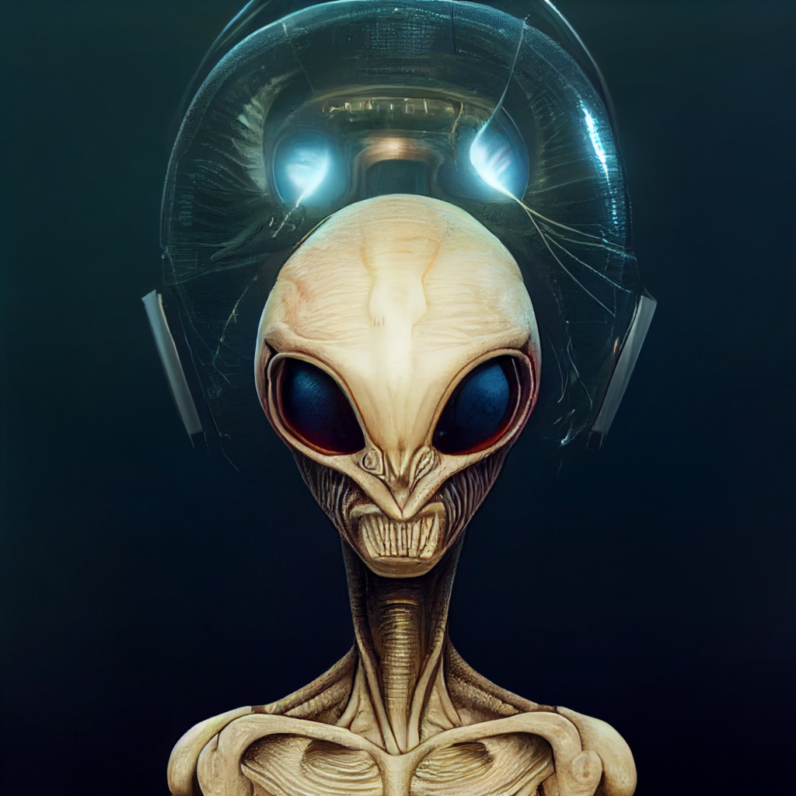

The Haunting of Owl's Eye


In the movie "The Invisible Invaders," aka "The Haunting of Owl's Eye," a small town is terrorized by aliens who are using the guise of owls to hide in plain sight and abduct people. A local sheriff and a scientist team up with a teenage girl who has been abducted to fight back against the aliens and save the town. In the end, they are able to destroy the aliens' ship and prevent it from returning to Earth, but they know they must remain vigilant in case the aliens return.
FADE IN:
EXT. TOWN SQUARE - DAY
The town square is bustling with people going about their daily lives. We see a group of children playing on the swings, a man walking his dog, and a group of teenagers hanging out on a bench.
Suddenly, we hear a strange noise and see a flash of light in the sky. Everyone looks up, but all they see is an owl perched on a nearby tree.
CUT TO:
INT. JENNY'S BEDROOM - NIGHT
Jenny, a teenage girl, is fast asleep in her bed. She stirs, as if sensing something strange in the room. She opens her eyes and sees a glowing light coming from outside her window.
She gets up to investigate, but as she looks outside, all she sees is the same owl from the town square perched on a tree. She rubs her eyes, thinking she must be seeing things.
But then she hears a strange, otherworldly noise and feels herself being lifted off the ground. She tries to scream, but no sound comes out. She is being carried away by the glowing light, out the window and into the night sky.
CUT TO:
INT. POLICE STATION - DAY
Jenny's parents are talking to the local sheriff, Jack, about their daughter's disappearance.
JACK: I'm sorry, but there's no sign of your daughter. It's like she just vanished into thin air.
MRS. JENKINS: But that's impossible. She was in her bedroom, sleeping.
JACK: I know it's hard to believe, but we've had several other reports of people disappearing in the same way.
MR. JENKINS: What do you think could have happened to her?
JACK: I'm not sure. Some people are saying it's aliens.
MRS. JENKINS: Aliens? That's ridiculous.
JACK: I know it sounds far-fetched, but we can't come up with any other explanation.
CUT TO:
INT. DR. JENKINS' LAB - DAY
Dr. Jenkins, a local scientist, is studying a series of strange artifacts that have been found near where the disappearances have been occurring.
DR. JENKINS: These artifacts are definitely not of this world. It's almost as if they're trying to leave us a trail to follow.
Jack enters the lab.
JACK: Have you made any progress on figuring out what's happening?
DR. JENKINS: I think I have. I believe the aliens are using the guise of owls to hide in plain sight and abduct people without being seen.
JACK: Owls? That's crazy.
DR. JENKINS: I know it sounds far-fetched, but it's the only explanation that makes sense.
CUT TO:
INT. ALIEN SHIP - DAY
Jenny is being held captive on the alien ship. She can see other people, including the missing cowboys from the beginning of the film, being held in cells around her.
She tries to communicate with them, but they are all in a daze, as if they are being controlled by the aliens.
Suddenly, she hears a commotion outside her cell and sees Jack and Dr. Jenkins fighting their way onto the ship.
JACK: Jenny! We're here to rescue you!
They manage to break into her cell and help her escape.
As they make their way through the ship, they are confronted by the aliens. The aliens are humanoid in appearance, but with elongated heads and large, black eyes. They try to stop Jack, Dr. Jenkins, and Jenny, but the three of them manage to fight them off.
They eventually make their way to the control room of the ship and find the alien leader. The alien leader reveals that they have been abducting people from Earth for experimentation and enslavement.
Jack, Dr. Jenkins, and Jenny are horrified by the revelation, but they know they must stop the aliens from continuing their nefarious plans. They come up with a plan to sabotage the ship and prevent it from returning to Earth.
As they try to implement their plan, they are once again confronted by the alien leader and his guards. A fierce battle ensues, but in the end, Jack, Dr. Jenkins, and Jenny are victorious.
The ship explodes, taking the aliens and their leader with it. As they escape back to Earth, they know that they have saved countless lives and protected their planet from the alien threat.
FADE TO BLACK.
Comments